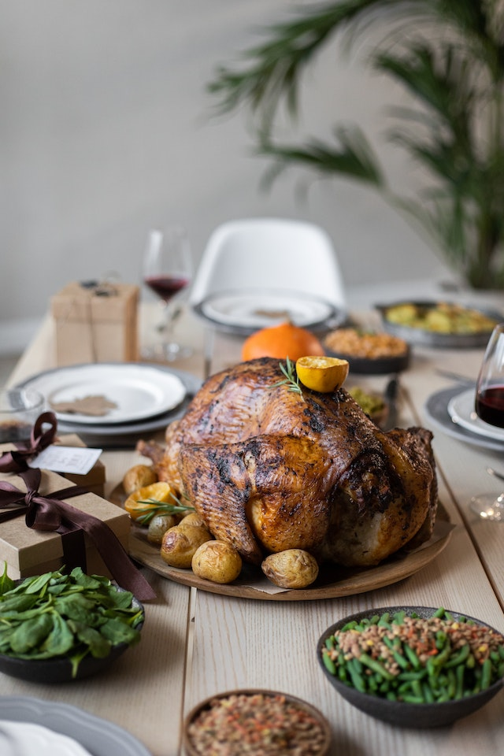

Roast chicken

Roasted chicken never fails to impress, but it's surprisingly simple to make! This juicy roasted chicken recipe is perfect for beginner cooks and old pros alike.
Roasting a whole chicken at home is easier than it seems. You'll find a detailed ingredient list and step-by-step instructions in the recipe below, but let's go over the basics:
ingredients
- Chicken: This recipe starts with a 3-pound whole chicken. If your bird is larger or smaller, you'll need to adjust the recipe.
- Seasonings: This roasted chicken is simply seasoned with salt, black pepper, and onion powder.
- Butter: Butter (or margarine, if you prefer) locks in moisture and gives the seasonings something to adhere to.
- Celery: Stuff the chicken cavity with celery for subtle vegetal flavor. Plus, the celery will release even more moisture as the chicken cooks.
step
- Season the chicken inside and out.
- Add the butter to the chicken and the pan.
- Stuff the cavity with celery.
- Bake until the chicken is fully roasted.